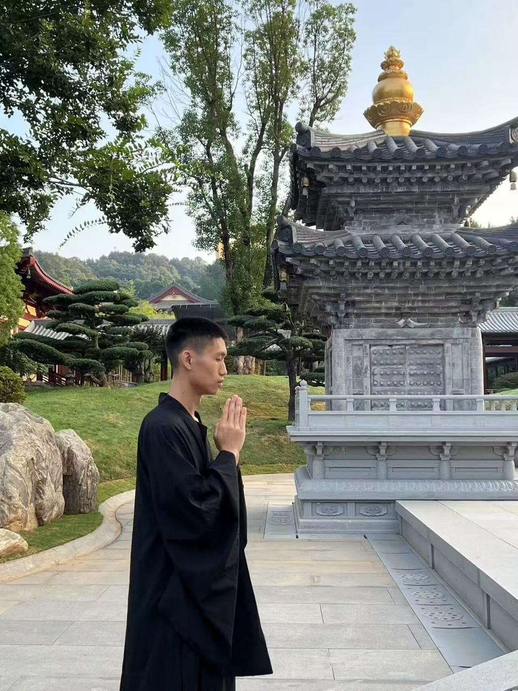
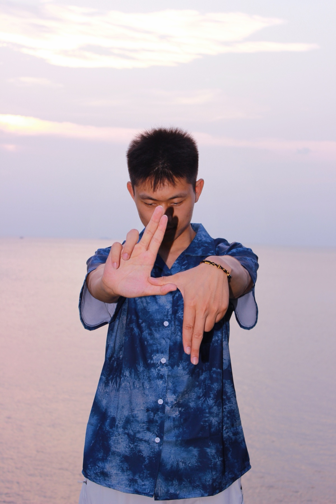
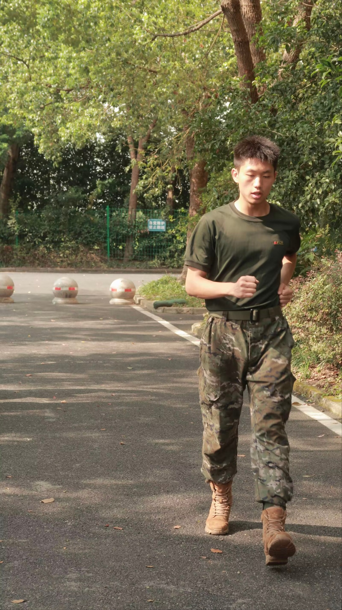
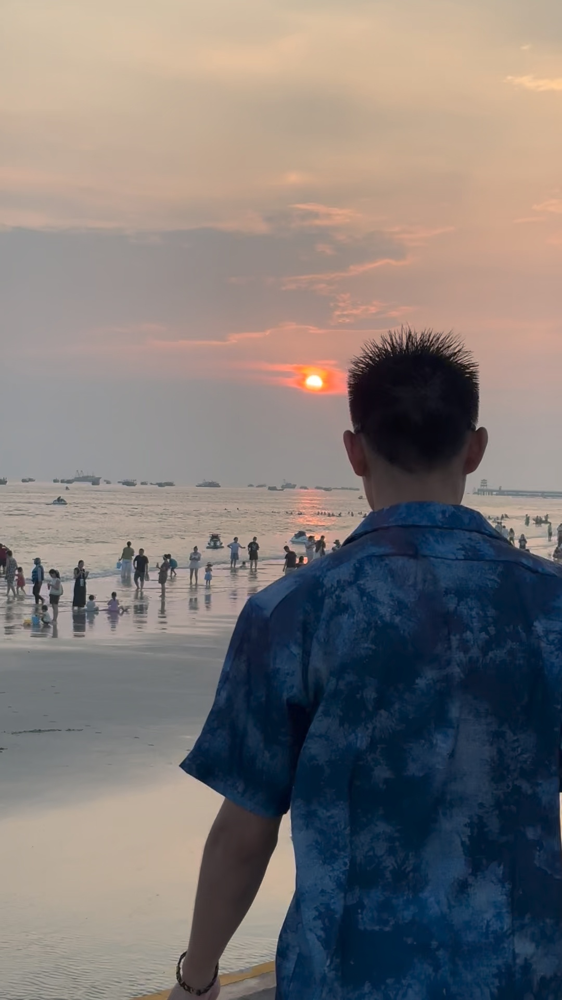

04阅读与生活
读书、听琴，
把日子过具体。
读书 · 跑步 · 写东西。工作之外，给自己留一点空间。
02最近在听
让旋律，
把日子放慢一点。
卡农、Flower Dance。
选一首，就在这里听一会儿。
01 / CANON IN D
卡农
一段旋律层层展开，安静，也有向前的力量。
钢琴独奏 · Lee Galloway · 2:5102 / DJ OKAWARI
Flower Dance 花之舞
轻快流动的琴声，适合给日常留一点明亮。
DJ OKAWARI · feat. tabeyellow只听音乐，慢慢浏览
选一首，听一会儿。
琴声，陪你留一个安静的片刻。播放歌曲时，背景轻音乐会暂停。Flower Dance 通过创作者的 SoundCloud 音频播放，加载速度取决于网络。
音乐来源
卡农：Johann Pachelbel 作曲，Lee Galloway 钢琴演奏；音频来自 Wikimedia Commons，按 CC BY-SA 3.0 使用，未剪辑。Flower Dance：DJ OKAWARI 发布的音频。
03传统文化
读儒释道，
也读自己的生活。
我喜欢传统文化、哲学与古诗词。儒、释、道各有脉络；修身、观心、自然，是我想继续读下去的三个入口。
儒01 / 修身
把原则，落在日常。
儒家重视仁、义、礼，关注修身与人与人之间的关系。对我而言，读这些文字，可以从一个具体的问题开始：怎样把诚信、责任与尊重落实到每天的选择里？
延伸阅读：中国孔子网 · 儒学释02 / 观心
先看见，再作回应。
“释”指佛教传统，缘起、无常是理解佛教思想的重要概念。《六祖坛经》也在我的书单中。我感兴趣的是如何觉察自己的念头：情绪升起时，能否先看清它，再决定怎样行动？
延伸阅读：臺大佛学资料库 · 缘起与无常道03 / 自然
用力，也留一点余地。
以老庄为代表的道家思想，重视道、自然与无为，思考人与天地的相处。工作之外，我喜欢跑步、听琴、独处。读道家，也是在想：什么值得坚持，什么时候可以把节奏放缓一些？
延伸阅读：中国孔子网 · 楼宇烈谈道家从书里提出问题，再回到生活中慢慢体会。

慢一点，也很好。听钟声，
听钟声，
和自己待一会儿。
我喜欢传统文化、儒释道、哲学与古诗词，也写一点东西。最近尤其爱读苏轼。闲时到古寺小住，在那里，人可以慢下来。
试问岭南应不好，苏轼《定风波》
却道：此心安处是吾乡。
读书、听琴、独处，是让自己重新安定下来的方式。
04生活里的片刻





日常我的兴趣
兴趣，是认识
自己的另一条路。
读一些书，写一点东西。
让身体动起来，也给心留一点空白。
01 / 阅读与写作
在字里行间，
继续提问。
喜欢看书，也喜欢哲学。小说让我走近不同人的处境，思想类的书则把问题带回自己。偶尔写一点东西，记录生活，也整理还没有想明白的事。
看看我的书架02 / 儒释道
读传统文化，
也观照日常。
儒释道是一直感兴趣的方向。修身、观心、自然，给了我不同的阅读入口。也喜欢去古寺小住，安静地待一会儿，慢慢接近内心平静的状态。
读儒释道的三个入口03 / 古诗词与苏轼
一句词，
能陪人走很远。
喜欢古诗词，最近尤其爱看苏轼。“此心安处是吾乡”是近来很喜欢的一句。词里有远行，也有心安；反复读，常能从同一句话里看到不同的意味。
读一句最近喜欢的词04 / 跑步与棒球
身体在路上，
人也继续向前。
大学时是棒球队校队成员，曾获大学生全国锦标赛亚军。日常喜欢跑步，现在也在学游泳：会蛙泳，接着练自由泳。以后还想尝试骑马和滑雪。
看我的运动与生活照片05 / 钢琴音乐
不急着说话，
先听一段旋律。
最近喜欢钢琴弹的音乐，常听卡农和 Flower Dance。比起把日程填满，也愿意留出一点没有任务的时间，让音乐陪自己待一会儿。
听听最近喜欢的音乐06 / 休息与独处
把日子过具体，
也允许自己休息。
不抽烟、不喝酒、不打游戏。喜欢跑步，也喜欢睡觉、偶尔看看手机。泡脚、倒走和独处都是日常的一部分；休息好了，再继续学习与生活。
看旅途里的一个片刻